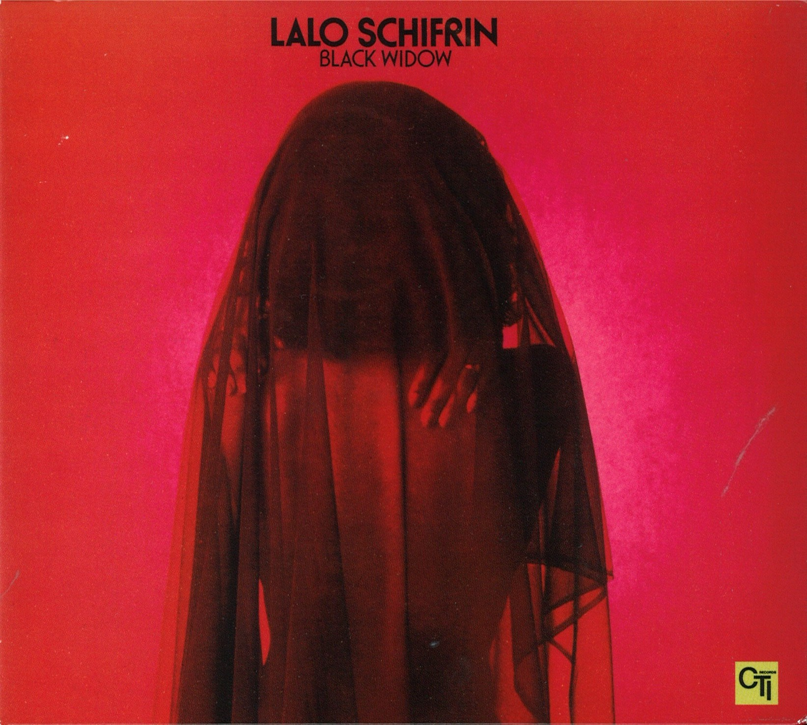

Lalo Schifrin - Black Widow

Información del álbum facilitada por discogs.com:
Fecha de lanzamiento: 1976
Géneros: Jazz, Funk / Soul
Estilos: Jazz-Funk, Disco
Pais: Italy
Votos: Media de 5.0 con 3 votos
Sello: Oxford
Tracklist:
A1. Black Widow (feat. Lalo Schifrin) 4:15
A2. Flamingo (feat. Edmund Anderson & Theodor Grouya) 4:28
A3. Quiet Village (feat. Les Baxter) 3:59
A4. Moonglow / Theme From Picnic (feat. Eddie Delange & Irving Mills & Will Hudson) 5:36
B1. Jaws (feat. John Williams (4)) 5:47
B2. Baia (feat. Ary Barroso & Ray Gilbert) 4:03
B3. Turning Point (feat. Lalo Schifrin) 3:28
B4. Dragonfly (feat. Lalo Schifrin) 5:15